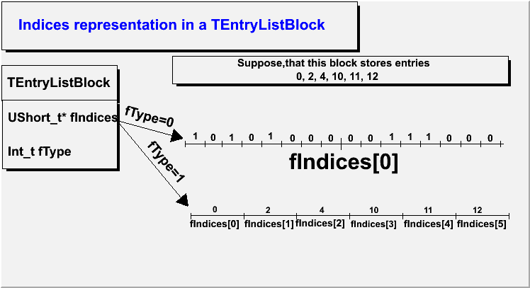
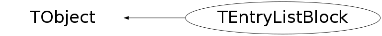

class TEntryListBlock: public TObject
TEntryListBlock: Used by TEntryList to store the entry numbers
- as bits, where passing entry numbers are assigned 1, not passing - 0
- as a simple array of entry numbers
- storing the numbers of entries that pass
- storing the numbers of entries that don't pass
{kind=link}

{
//=========Macro generated from canvas: c/c
//========= (Fri Mar 16 18:59:21 2007) by ROOT version5.15/03
TCanvas *c = new TCanvas("c", "c",49,123,752,435);
c->Range(0,0,1,1);
c->SetBorderSize(2);
c->SetFrameFillColor(0);
TPaveText *pt = new TPaveText(0.00313972,0.650146,0.22135,0.772595,"br");
pt->SetFillColor(19);
TText *text = pt->AddText("TEntryListBlock");
pt->Draw();
pt = new TPaveText(0.00313972,0.827988,0.675039,0.994169,"br");
pt->SetFillColor(19);
pt->SetTextColor(4);
text = pt->AddText("Indices representation in a TEntryListBlock");
pt->Draw();
pt = new TPaveText(0.00410678,0.412955,0.221766,0.651822,"br");
pt->SetFillColor(19);
pt->SetTextAlign(12);
pt->SetTextSize(0.048583);
text = pt->AddText("UShort_t* fIndices");
text = pt->AddText("Int_t fType");
pt->Draw();
pt = new TPaveText(0.324961,0.708455,0.959184,0.804665,"br");
pt->SetFillColor(19);
text = pt->AddText("Suppose,that this block stores entries");
text = pt->AddText("0, 2, 4, 10, 11, 12");
pt->Draw();
pt = new TPaveText(0.232227,0.541176,0.333333,0.641176,"br");
pt->SetBorderSize(0);
pt->SetFillColor(19);
text = pt->AddText("fType=0");
text->SetTextAngle(-15);
pt->Draw();
pt = new TPaveText(0.355114,0.189066,0.457386,0.255125,"br");
pt->SetBorderSize(0);
pt->SetFillColor(19);
text = pt->AddText("fIndices[0]");
pt->Draw();
pt = new TPaveText(0.521193,0.38484,0.77708,0.48105,"br");
pt->SetBorderSize(0);
pt->SetFillColor(19);
text = pt->AddText("fIndices[0]");
pt->Draw();
pt = new TPaveText(0.355619,0.239726,0.458037,0.305936,"br");
pt->SetBorderSize(0);
pt->SetFillColor(19);
pt->SetTextSize(0.0342466);
text = pt->AddText("0");
pt->Draw();
pt = new TPaveText(0.264241,0.383481,0.363924,0.486726,"br");
pt->SetBorderSize(0);
pt->SetFillColor(19);
text = pt->AddText("fType=1");
text->SetTextAngle(-50);
pt->Draw();
pt = new TPaveText(0.458807,0.173121,0.559659,0.273349,"br");
pt->SetBorderSize(0);
pt->SetFillColor(19);
text = pt->AddText("fIndices[1]");
pt->Draw();
pt = new TPaveText(0.473684,0.251142,0.540541,0.299087,"br");
pt->SetBorderSize(0);
pt->SetFillColor(19);
pt->SetTextSize(0.0342466);
text = pt->AddText("2");
pt->Draw();
pt = new TPaveText(0.556818,0.193622,0.659091,0.250569,"br");
pt->SetBorderSize(0);
pt->SetFillColor(19);
text = pt->AddText("fIndices[2]");
pt->Draw();
pt = new TPaveText(0.55761,0.244292,0.660028,0.30137,"br");
pt->SetBorderSize(0);
pt->SetFillColor(19);
pt->SetTextSize(0.0342466);
text = pt->AddText("4");
pt->Draw();
pt = new TPaveText(0.659091,0.191344,0.758523,0.255125,"br");
pt->SetBorderSize(0);
pt->SetFillColor(19);
text = pt->AddText("fIndices[3]");
pt->Draw();
pt = new TPaveText(0.657183,0.239726,0.756757,0.303653,"br");
pt->SetBorderSize(0);
pt->SetFillColor(19);
pt->SetTextSize(0.0342466);
text = pt->AddText("10");
pt->Draw();
pt = new TPaveText(0.759943,0.189066,0.859375,0.255125,"br");
pt->SetBorderSize(0);
pt->SetFillColor(19);
text = pt->AddText("fIndices[4]");
pt->Draw();
pt = new TPaveText(0.758179,0.239726,0.857752,0.305936,"br");
pt->SetBorderSize(0);
pt->SetFillColor(19);
pt->SetTextSize(0.0342466);
text = pt->AddText("11");
pt->Draw();
pt = new TPaveText(0.859943,0.189066,0.959375,0.255125,"br");
pt->SetBorderSize(0);
pt->SetFillColor(19);
text = pt->AddText("fIndices[5]");
pt->Draw();
pt = new TPaveText(0.852063,0.239726,0.951636,0.305936,"br");
pt->SetBorderSize(0);
pt->SetFillColor(19);
pt->SetTextSize(0.0342466);
text = pt->AddText("12");
pt->Draw();
pt = new TPaveText(0.786325,0.503432,0.830484,0.549199,"br");
pt->SetBorderSize(0);
pt->SetFillColor(19);
text = pt->AddText("1");
pt->Draw();
pt = new TPaveText(0.750712,0.503432,0.796296,0.549199,"br");
pt->SetBorderSize(0);
pt->SetFillColor(19);
text = pt->AddText("1");
pt->Draw();
pt = new TPaveText(0.825472,0.5,0.871069,0.54386,"br");
pt->SetBorderSize(0);
pt->SetFillColor(19);
text = pt->AddText("0");
pt->Draw();
pt = new TPaveText(0.863208,0.5,0.908805,0.54386,"br");
pt->SetBorderSize(0);
pt->SetFillColor(19);
text = pt->AddText("0");
pt->Draw();
pt = new TPaveText(0.902516,0.5,0.948113,0.54386,"br");
pt->SetBorderSize(0);
pt->SetFillColor(19);
text = pt->AddText("0");
pt->Draw();
pt = new TPaveText(0.677673,0.5,0.72327,0.54386,"br");
pt->SetBorderSize(0);
pt->SetFillColor(19);
text = pt->AddText("0");
pt->Draw();
pt = new TPaveText(0.639937,0.5,0.685535,0.54386,"br");
pt->SetBorderSize(0);
pt->SetFillColor(19);
text = pt->AddText("0");
pt->Draw();
pt = new TPaveText(0.602201,0.5,0.647799,0.54386,"br");
pt->SetBorderSize(0);
pt->SetFillColor(19);
text = pt->AddText("0");
pt->Draw();
pt = new TPaveText(0.564465,0.5,0.610063,0.54386,"br");
pt->SetBorderSize(0);
pt->SetFillColor(19);
text = pt->AddText("0");
pt->Draw();
pt = new TPaveText(0.529874,0.5,0.575472,0.54386,"br");
pt->SetBorderSize(0);
pt->SetFillColor(19);
text = pt->AddText("0");
pt->Draw();
pt = new TPaveText(0.45283,0.502924,0.498428,0.546784,"br");
pt->SetBorderSize(0);
pt->SetFillColor(19);
text = pt->AddText("0");
pt->Draw();
pt = new TPaveText(0.380503,0.502924,0.426101,0.546784,"br");
pt->SetBorderSize(0);
pt->SetFillColor(19);
text = pt->AddText("0");
pt->Draw();
pt = new TPaveText(0.710826,0.503432,0.766382,0.549199,"br");
pt->SetBorderSize(0);
pt->SetFillColor(19);
text = pt->AddText("1");
pt->Draw();
pt = new TPaveText(0.487179,0.505721,0.532764,0.551487,"br");
pt->SetBorderSize(0);
pt->SetFillColor(19);
pt->SetTextSize(0.0389016);
text = pt->AddText("1");
pt->Draw();
pt = new TPaveText(0.413105,0.501144,0.460114,0.549199,"br");
pt->SetBorderSize(0);
pt->SetFillColor(19);
pt->SetTextSize(0.0389016);
text = pt->AddText("1");
pt->Draw();
pt = new TPaveText(0.344729,0.505721,0.393162,0.551487,"br");
pt->SetBorderSize(0);
pt->SetFillColor(19);
text = pt->AddText("1");
pt->Draw();
TArrow *arrow = new TArrow(0.225552,0.572271,0.35489,0.283186,0.03,"|>");
arrow->SetFillColor(1);
arrow->SetFillStyle(1001);
arrow->Draw();
arrow = new TArrow(0.22082,0.581121,0.344937,0.519174,0.03,"|>");
arrow->SetFillColor(1);
arrow->SetFillStyle(1001);
arrow->Draw();
TLine *line = new TLine(0.35,0.5,0.95,0.5);
line->Draw();
line = new TLine(0.35,0.49,0.35,0.51);
line->Draw();
line = new TLine(0.3875,0.49,0.3875,0.51);
line->Draw();
line = new TLine(0.419,0.49,0.419,0.51);
line->Draw();
line = new TLine(0.4565,0.49,0.4565,0.51);
line->Draw();
line = new TLine(0.494,0.49,0.494,0.51);
line->Draw();
line = new TLine(0.5315,0.49,0.5315,0.51);
line->Draw();
line = new TLine(0.569,0.49,0.569,0.51);
line->Draw();
line = new TLine(0.6065,0.49,0.6065,0.51);
line->Draw();
line = new TLine(0.644,0.48,0.644,0.52);
line->Draw();
line = new TLine(0.6815,0.49,0.6815,0.51);
line->Draw();
line = new TLine(0.719,0.49,0.719,0.51);
line->Draw();
line = new TLine(0.7565,0.49,0.7565,0.51);
line->Draw();
line = new TLine(0.794,0.49,0.794,0.51);
line->Draw();
line = new TLine(0.8315,0.49,0.8315,0.51);
line->Draw();
line = new TLine(0.869,0.49,0.869,0.51);
line->Draw();
line = new TLine(0.9065,0.49,0.9065,0.51);
line->Draw();
line = new TLine(0.944,0.49,0.944,0.51);
line->Draw();
line = new TLine(0.944,0.49,0.944,0.51);
line->Draw();
line = new TLine(0.36,0.251142,0.96,0.251142);
line->Draw();
line = new TLine(0.36,0.24,0.36,0.26);
line->Draw();
line = new TLine(0.46,0.24,0.46,0.26);
line->Draw();
line = new TLine(0.56,0.24,0.56,0.26);
line->Draw();
line = new TLine(0.66,0.24,0.66,0.26);
line->Draw();
line = new TLine(0.76,0.24,0.76,0.26);
line->Draw();
line = new TLine(0.86,0.24,0.86,0.26);
line->Draw();
line = new TLine(0.96,0.24,0.96,0.26);
line->Draw();
return c;
}Operations on blocks (see also function comments)
- Merge() - adds all entries from one block to the other. If the first block uses array representation, it's changed to bits representation only if the total number of passing entries is still less than kBlockSize
- GetEntry(n) - returns n-th non-zero entry.
- Next() - return next non-zero entry. In case of representation 1), Next() is faster than GetEntry()
Function Members (Methods)
public:
| TEntryListBlock() | |
| TEntryListBlock(const TEntryListBlock& eblock) | |
| virtual | ~TEntryListBlock() |
| void | TObject::AbstractMethod(const char* method) const |
| virtual void | TObject::AppendPad(Option_t* option = "") |
| virtual void | TObject::Browse(TBrowser* b) |
| static TClass* | Class() |
| virtual const char* | TObject::ClassName() const |
| virtual void | TObject::Clear(Option_t* = "") |
| virtual TObject* | TObject::Clone(const char* newname = "") const |
| virtual Int_t | TObject::Compare(const TObject* obj) const |
| Int_t | Contains(Int_t entry) |
| virtual void | TObject::Copy(TObject& object) const |
| virtual void | TObject::Delete(Option_t* option = "")MENU |
| virtual Int_t | TObject::DistancetoPrimitive(Int_t px, Int_t py) |
| virtual void | TObject::Draw(Option_t* option = "") |
| virtual void | TObject::DrawClass() constMENU |
| virtual TObject* | TObject::DrawClone(Option_t* option = "") constMENU |
| virtual void | TObject::Dump() constMENU |
| Bool_t | Enter(Int_t entry) |
| virtual void | TObject::Error(const char* method, const char* msgfmt) const |
| virtual void | TObject::Execute(const char* method, const char* params, Int_t* error = 0) |
| virtual void | TObject::Execute(TMethod* method, TObjArray* params, Int_t* error = 0) |
| virtual void | TObject::ExecuteEvent(Int_t event, Int_t px, Int_t py) |
| virtual void | TObject::Fatal(const char* method, const char* msgfmt) const |
| virtual TObject* | TObject::FindObject(const char* name) const |
| virtual TObject* | TObject::FindObject(const TObject* obj) const |
| virtual Option_t* | TObject::GetDrawOption() const |
| static Long_t | TObject::GetDtorOnly() |
| Int_t | GetEntry(Int_t entry) |
| virtual const char* | TObject::GetIconName() const |
| virtual const char* | TObject::GetName() const |
| Int_t | GetNPassed() |
| virtual char* | TObject::GetObjectInfo(Int_t px, Int_t py) const |
| static Bool_t | TObject::GetObjectStat() |
| virtual Option_t* | TObject::GetOption() const |
| virtual const char* | TObject::GetTitle() const |
| Int_t | GetType() |
| virtual UInt_t | TObject::GetUniqueID() const |
| virtual Bool_t | TObject::HandleTimer(TTimer* timer) |
| virtual ULong_t | TObject::Hash() const |
| virtual void | TObject::Info(const char* method, const char* msgfmt) const |
| virtual Bool_t | TObject::InheritsFrom(const char* classname) const |
| virtual Bool_t | TObject::InheritsFrom(const TClass* cl) const |
| virtual void | TObject::Inspect() constMENU |
| void | TObject::InvertBit(UInt_t f) |
| virtual TClass* | IsA() const |
| virtual Bool_t | TObject::IsEqual(const TObject* obj) const |
| virtual Bool_t | TObject::IsFolder() const |
| Bool_t | TObject::IsOnHeap() const |
| virtual Bool_t | TObject::IsSortable() const |
| Bool_t | TObject::IsZombie() const |
| virtual void | TObject::ls(Option_t* option = "") const |
| void | TObject::MayNotUse(const char* method) const |
| Int_t | Merge(TEntryListBlock* block) |
| Int_t | Next() |
| virtual Bool_t | TObject::Notify() |
| void | TObject::Obsolete(const char* method, const char* asOfVers, const char* removedFromVers) const |
| static void | TObject::operator delete(void* ptr) |
| static void | TObject::operator delete(void* ptr, void* vp) |
| static void | TObject::operator delete[](void* ptr) |
| static void | TObject::operator delete[](void* ptr, void* vp) |
| void* | TObject::operator new(size_t sz) |
| void* | TObject::operator new(size_t sz, void* vp) |
| void* | TObject::operator new[](size_t sz) |
| void* | TObject::operator new[](size_t sz, void* vp) |
| TEntryListBlock& | operator=(const TEntryListBlock&) |
| void | OptimizeStorage() |
| virtual void | TObject::Paint(Option_t* option = "") |
| virtual void | TObject::Pop() |
| virtual void | Print(Option_t* option = "") const |
| void | PrintWithShift(Int_t shift) const |
| virtual Int_t | TObject::Read(const char* name) |
| virtual void | TObject::RecursiveRemove(TObject* obj) |
| Bool_t | Remove(Int_t entry) |
| void | TObject::ResetBit(UInt_t f) |
| void | ResetIndices() |
| virtual void | TObject::SaveAs(const char* filename = "", Option_t* option = "") constMENU |
| virtual void | TObject::SavePrimitive(ostream& out, Option_t* option = "") |
| void | TObject::SetBit(UInt_t f) |
| void | TObject::SetBit(UInt_t f, Bool_t set) |
| virtual void | TObject::SetDrawOption(Option_t* option = "")MENU |
| static void | TObject::SetDtorOnly(void* obj) |
| static void | TObject::SetObjectStat(Bool_t stat) |
| virtual void | TObject::SetUniqueID(UInt_t uid) |
| virtual void | ShowMembers(TMemberInspector& insp) |
| virtual void | Streamer(TBuffer& b) |
| void | StreamerNVirtual(TBuffer& b) |
| virtual void | TObject::SysError(const char* method, const char* msgfmt) const |
| Bool_t | TObject::TestBit(UInt_t f) const |
| Int_t | TObject::TestBits(UInt_t f) const |
| virtual void | TObject::UseCurrentStyle() |
| virtual void | TObject::Warning(const char* method, const char* msgfmt) const |
| virtual Int_t | TObject::Write(const char* name = 0, Int_t option = 0, Int_t bufsize = 0) |
| virtual Int_t | TObject::Write(const char* name = 0, Int_t option = 0, Int_t bufsize = 0) const |
protected:
| virtual void | TObject::DoError(int level, const char* location, const char* fmt, va_list va) const |
| void | TObject::MakeZombie() |
| void | Transform(Bool_t dir, UShort_t* indexnew) |
Data Members
public:
| enum { | kBlockSize | |
| }; | ||
| enum TObject::EStatusBits { | kCanDelete | |
| kMustCleanup | ||
| kObjInCanvas | ||
| kIsReferenced | ||
| kHasUUID | ||
| kCannotPick | ||
| kNoContextMenu | ||
| kInvalidObject | ||
| }; | ||
| enum TObject::[unnamed] { | kIsOnHeap | |
| kNotDeleted | ||
| kZombie | ||
| kBitMask | ||
| kSingleKey | ||
| kOverwrite | ||
| kWriteDelete | ||
| }; |
protected:
| UShort_t | fCurrent | ! to fasten Contains() in list mode |
| UShort_t* | fIndices | [fN] |
| Int_t | fLastIndexQueried | ! to optimize GetEntry() in a loop |
| Int_t | fLastIndexReturned | ! to optimize GetEntry() in a loop |
| Int_t | fN | size of fIndices for I/O =fNPassed for list, fBlockSize for bits |
| Int_t | fNPassed | number of entries in the entry list (if fPassing=0 - number of entries |
| Bool_t | fPassing | 1 - stores entries that belong to the list |
| Int_t | fType | 0 - bits, 1 - list |
Class Charts
{kind=link}
{kind=link}
{kind=link}
{kind=link}

Function documentation
Bool_t Enter(Int_t entry)
If the block has already been optimized and the entries are stored as a list and not as bits, trying to enter a new entry will make the block switch to bits representation
Bool_t Remove(Int_t entry)
Remove entry #entry If the block has already been optimized and the entries are stored as a list and not as bits, trying to remove a new entry will make the block switch to bits representation
Int_t Merge(TEntryListBlock* block)
Merge with the other block Returns the resulting number of entries in the block
void PrintWithShift(Int_t shift) const
print the indices of this block + shift (used from TEntryList::Print()) to print the corrent values
void OptimizeStorage()
if there are < kBlockSize or >kBlockSize*15 entries, change to an array representation